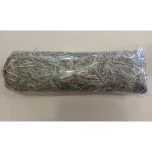

GAMTINĖ ŽEMDIRBYSTĖ • Temos rodymas - Šienas
GAMTINĖ ŽEMDIRBYSTĖ
DIDŽIAUSIAS LIETUVIŠKAS FORUMAS APIE ŠVARŲ ŪKININKAVIMĄ
Rodyti turinį
Pagrindinis diskusijų puslapis ‹ Gyvulininkystė ‹ Bendros gyvulininkystės temos Pakeisti šrifto dydį Siųsti temos nuorodą draugui el. paštu Spausdinti DUK Registruotis PrisijungtiŠienas
Kam netelpa į specializuotus forumusModeratoriai: dage , saulius
Atsakymo rašymas 72 pranešimai(ų) • Puslapis 1 iš 8 • 1 , 2 , 3 , 4 , 5 ... 8 Raportuoti apie šį pranešimąŠienas
lugne Pir Gru 22, 2014 2:05 pm
Buvau seminare Dargužiuos, jie ką tik grįžę iš Prancūzijos, tai pasakojo, kad ūkyje, kuriame jie buvo šienas džiovinamas... elektra. Panaudojama šiluma, susikaupianti palei tvarto stogą ir elektros pagalba tas karštas oras iš po pat stogo pučiamas ir žolė labai greit ir kokybiškai džiūsta. Neaktualu tampa orai ir visada turi aukščiausios kokybės šieno, kas sūrininkams ypatingai aktualu, nes nenaudojamas net šienainis, nekalbant apie silosą ir pan. šiuolaikinius išradimus - ilgai brandinti sūrius gali tik šerdamas vien šienu, visa kita gadina pieną ir tada būtinai turi pasterizuoti. Jurga Stoškutė lugne Pranešimai: 1444 Užsiregistravo: Pen Bal 10, 2009 1:54 pm Miestas: Marcinkonys, Varėnos raj. Asmeninė žinutė Į viršų Raportuoti apie šį pranešimąRe: Šienas
saulius Pir Gru 22, 2014 2:14 pm
O tai kur džiovina žolę? Tvarte? Kaip visa tai įtaisyta?Ir dar nesupratau dėl šėrimo: ir vasarą šienu šeria? Saulius Jasionis saulius Site Admin Pranešimai: 8592 Užsiregistravo: Ket Spa 09, 2008 3:02 pm Asmeninė žinutė Į viršų Raportuoti apie šį pranešimą
Re: Šienas
lugne Pir Gru 22, 2014 2:15 pm
Prie to pačio prisiminiau, kad pas mus kaime prie kluono po stogu buvo padarytos tokios pakadnios - tarsi lentynos iš karčių. Jos lauke, bet po stogu. Ant jų pabaigdavo džiovint šieną jei orai subjurdavo, o kartais kai pašienaudavo nedaug, sukraudavo žolę ir ji ten gan greit išdžiūdavo. Kažkas panašaus yra žaginiai jeigu juos sukonstruot su stogeliu.Labai aktualus gero kokybiško šieno pasiruošimas, nes pirkimas ne tik kad muša per kišenę, tai dar dažnai ir perki katę maiše, bent jau mūsų krašte.
Ieškau variantų, kaip mažiausiom darbo sąnaudom pasigamint geros kokybės pašaro žiemai. Juk jei kada ir pavyktų suformuot pakankamai geras ir įvairiažoles ganyklas, reiktų, kad jos tarnautų ir pašarui žiemai, ne tik vasarą nuganyt.
Kad karvės ganysis pačios žiemą ir joms nereiks šieno, man kol kas atrodo utopiška
Aišku, prancūzų variantas buvo tik pavyzdys, nes bankrutuotum nuo elektros kainų. Jurga Stoškutė lugne Pranešimai: 1444 Užsiregistravo: Pen Bal 10, 2009 1:54 pm Miestas: Marcinkonys, Varėnos raj. Asmeninė žinutė Į viršų Raportuoti apie šį pranešimą
Re: Šienas
lugne Pir Gru 22, 2014 2:17 pm
Nu ten tvartas gal 200 karvių. Žolę džiovina kažkur palei stogą, technikos ten bile kiek, dirba ūky 11 žmonių. Ūkio pajamos iš sūrių ir duonos.Vasarą karvės ganosi kalnuose. Jurga Stoškutė lugne Pranešimai: 1444 Užsiregistravo: Pen Bal 10, 2009 1:54 pm Miestas: Marcinkonys, Varėnos raj. Asmeninė žinutė Į viršų Raportuoti apie šį pranešimą
Re: Šienas
saulius Pir Gru 22, 2014 2:23 pm
Žaiginiai ir be stogelio labai gerai: vanduo nuo jų nubėga, o saulės gauna tik pats viršutinis sluoksnis, apačioj šienas būna žalias.Man irgi aktuali šieno kokybė, nes irgi tas pats: pirktas rulonuose - prastas. O jis ir negali būt geras, nes rotacinė pjauna bile kaip, su visais grumstais ir kupstais, pjauna irgi bile kada, džiovinamas irgi bile kaip. Gerą šieną pjaut riekia dalgiu. Ir va čia didžiausia problema: karvėms jo reikia daug, o pjovėjų šiais laikais... pati žinai. Nu arba arkliais. Bet jeigu jau laikyt du arklius, reikia jiems ir darbo pakankamai duot, o ir gyvena ne šventa dvasia, irgi ėst nori.... Saulius Jasionis saulius Site Admin Pranešimai: 8592 Užsiregistravo: Ket Spa 09, 2008 3:02 pm Asmeninė žinutė Į viršų Raportuoti apie šį pranešimą
Re: Šienas
lugne Pir Gru 22, 2014 2:40 pm
Bet ant žaginių deda jau pavytusį šieną arba labai plonai, daug žaginių reikia. O ir sukraut ant jo nėra taip paprasta.Nu bet jei ir nupjaunant jau susgadina, tai tada padėtis be išeities.... Jurga Stoškutė lugne Pranešimai: 1444 Užsiregistravo: Pen Bal 10, 2009 1:54 pm Miestas: Marcinkonys, Varėnos raj. Asmeninė žinutė Į viršų Raportuoti apie šį pranešimą
Re: Šienas
saulius Pir Gru 22, 2014 2:49 pm
Su išeitim. Reikia chebros šienpjovių. Dieną apdžiūsta ir kraut į žaginius. Sukraut tai paprasta, kas ten tau sunkaus? O pilnai iždžiūvusį galima į kūgį arba vežt kluonan.Aš galvojau padaryt taip. Žiemos ganykloj kraut kūgį šieno, kad karvės pačios galėtų pešt. Taip senovėj irgi darydavo. Bet būtų patogiau, kad ten pat ir šienaut, nereiktų toli vežiot. Tai vasarą ganyt vienoj vietoj, o žiemą kitoj, prie tvarto. Žiemą karvės vaikščioja po lauką, viską užtręšia, vasarą gerai auga žolė, tada dukart nupjauni ir sukrauni kūgius. Kai labai vešli žolė, tai ir pjaut nebaisu, nedaug ploto reikia. Saulius Jasionis saulius Site Admin Pranešimai: 8592 Užsiregistravo: Ket Spa 09, 2008 3:02 pm Asmeninė žinutė Į viršų Raportuoti apie šį pranešimą
Re: Šienas
saulius Pir Gru 22, 2014 3:11 pm
Dar viena rulonų bėda- jeigu laiku pjautas šienas, labai sukapoja pelės. Ne tik sukapoja, bet ir sumyža, o tada karvės nenori ėst. Rulone jos pasidaro urvus ir ten saugiai gyvena, nei katinas, nei šeškas nepaima. O kūgyje, nors ir būna pelių, landžioja ir šeškai, ir žebenkštys, ir katinui patogiau. Saulius Jasionis saulius Site Admin Pranešimai: 8592 Užsiregistravo: Ket Spa 09, 2008 3:02 pm Asmeninė žinutė Į viršų Raportuoti apie šį pranešimąRe: Šienas
Mama Smilga Pir Gru 22, 2014 3:25 pm
Štai todėl reikalinga didelė šeima. Išbirdavom pievoje - ir susigrėbdavom, ir susiveždavom į daržinę. Tik tai, kas netilpdavo, sukraudavom į kaugę. Iš jos imdavom pirmiausiai, kad kuo mažiau spėtų krituliai ir pelės apgadint. Mama Smilga Pranešimai: 1831 Užsiregistravo: Tre Bal 06, 2011 12:48 am Asmeninė žinutė Į viršų Raportuoti apie šį pranešimąRe: Šienas
lugne Pir Gru 22, 2014 3:25 pm
Bet kūgių jei gerai sukrauti nereikia dengt niekuo? Tikrai seniau niekuo nedengė, pas mus gi Čepkeliuose šienavo, kūgius sukraudavo ir tik žiemą parveždavo, kai pašalas tvirtas. Dabar žiūriu visur laukuose, jei tik kokia kupeta, tai būtinai celofanu apdengta. Man rodos pelyt turi po tuo celofanu. Gi kūgio neperlyja.Mes pernai iš durnumo du rulonus tentu apdengėm, bet ne stogelį pakeltą padarėm, o užklojom tentu ir prispaudėm. Šienas velniop, suplėko. Jurga Stoškutė lugne Pranešimai: 1444 Užsiregistravo: Pen Bal 10, 2009 1:54 pm Miestas: Marcinkonys, Varėnos raj. Asmeninė žinutė Į viršų Atsakymo rašymas 72 pranešimai(ų) • Puslapis 1 iš 8 • 1 , 2 , 3 , 4 , 5 ... 8
Grįžti į Bendros gyvulininkystės temos
Dabar prisijungę
Vartotojai naršantys šį forumą: Registruotų vartotojų nėra ir 0 svečių
Switch to mobile style Pagrindinis diskusijų puslapis Komanda • Ištrinti visus diskusijų sausainėlius • Visos datos yra UTC + 2 valandos [ DST ] POWERED_BYVertė Vilius Šumskas © 2003, 2005, 2007